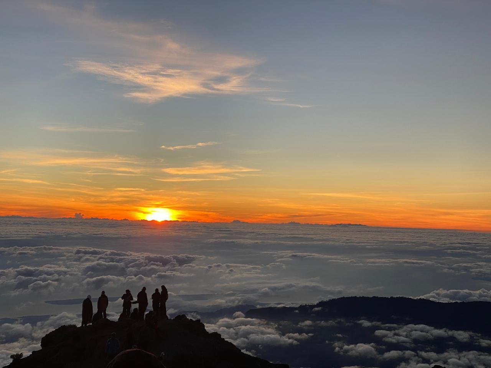

Mount Rinjani stands as one of Indonesia’s highest volcanoes, drawing thousands of hikers from home and abroad every year. Located on Lombok Island, West Nusa Tenggara, this majestic peak offers breathtaking views of a massive caldera, the turquoise-blue Segara Anak Lake, natural hot springs, and a summit reaching 3,726 meters — home to one of the most iconic sunrise views in Eastern Indonesia.
The official 2026 trekking season is now open. If you are planning your journey to Rinjani, this guide covers everything you need to prepare — from available routes and cost estimates, to essential gear and vital tips for a safe and memorable climb.
What Makes Mount Rinjani So Extraordinary?
Rinjani is far more than just a mountain. The entire region forms a protected National Park, home to endemic wildlife and plant life, and holds deep spiritual and cultural significance for the local Sasak people and Balinese Hindu community. Segara Anak Lake is considered a sacred site, where traditional rituals are still practiced annually by surrounding villagers.
Beyond its cultural value, Rinjani’s landscape is truly spectacular: a caldera spanning over 3,500 hectares, the still-active Mount Baru Jari rising from the lake, and hiking trails that are challenging yet achievable even for beginners — provided you are well-prepared and accompanied by experienced guides.
Two Main Rinjani Hiking Routes
1. Senaru Route
The Senaru trail is the most popular gateway, especially for those wishing to reach Segara Anak Lake and enjoy the natural hot springs. This path winds through lush tropical rainforest before emerging at the Senaru Rim — the best vantage point to overlook the vast caldera from above.
2. Sembalun Route
The Sembalun trail opens onto wide savannah grasslands and is the preferred route for hikers aiming for the summit. The path is more exposed and sunlit during the day, but rewards you with stunning open landscapes — especially breathtaking at sunrise and sunset.
Many experienced hikers recommend the combination route: ascend via Sembalun to reach the summit at sunrise, then descend through Senaru to visit the lake. This 3–4 day journey lets you experience the very best of Rinjani in a single trip.

A majestic view from the crater rim.
Estimated Trekking Costs
Rinjani trekking prices vary depending on trip duration, number of porters, and services included. Generally, costs cover:
- Mount Rinjani National Park entrance fees (different rates apply for domestic and international visitors).
- Certified local guide and porter services.
- Camping equipment (tent, sleeping bag, sleeping mat).
- Meals and drinking water during the trek.
- Round-trip transport to and from the trailhead.
Booking directly with operators based in Senaru or Sembalun ensures transparent pricing without extra markup from third-party agencies.
Essential Gear Checklist
Items you must bring when hiking Rinjani:
- Broken-in trekking boots — suitable for rocky, sandy, and uneven terrain.
- Thick windproof jacket — temperatures near the summit can drop below freezing.
- Headlamp + spare batteries — essential for early morning summit attempts.
- Trekking poles — provide stability on steep ascents and slippery sand descents.
- Water bottles + purification tablets — water is available at checkpoints but not always drinkable.
- Sunscreen & sunglasses — critical on the exposed Sembalun route.
Insider Tips from Senaru Local Guides
Born and raised at the foot of Rinjani, here is what most first-time hikers tend to overlook:
- Acclimatize properly. Do not push too hard on Day 1; your body needs time to adjust to the altitude.
- Summit attempts begin around midnight. Usually starting between 02:00–03:00 AM to reach the peak at sunrise, before strong winds arrive.
- Weather changes rapidly. Always follow your guide’s advice regarding trail and weather conditions, especially approaching the rainy season.
- Book directly with local guides. You get fairer prices, and more of your payment supports the local community.
Don't Worry About Dirty Clothes!
After days on the dusty trail, don't worry about packing dirty clothes for your next destination. Rinjani Trekking Pro offers an exclusive post-trek laundry service for our guests, so you can continue your holiday in Indonesia feeling completely fresh.
Ask About Our Packages via WhatsAppConclusion
Hiking Mount Rinjani is an experience that combines physical challenge, breathtaking natural beauty, and rich local culture. With proper preparation — choosing the right route, packing suitable gear, and hiring trusted local guides — this journey will become one of the most unforgettable adventures of your life.
If you are planning to hike Rinjani in the 2026 season, we recommend booking early. Daily hiker quotas are strictly limited by the National Park authority to protect this precious environment.